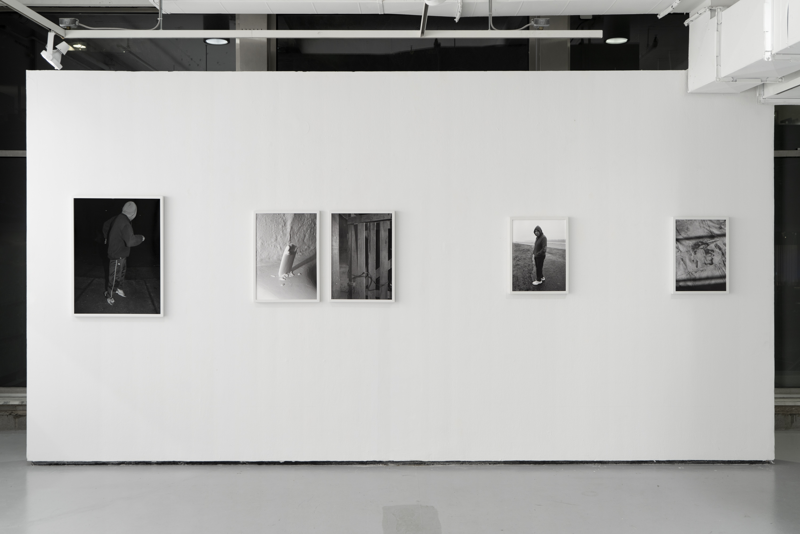
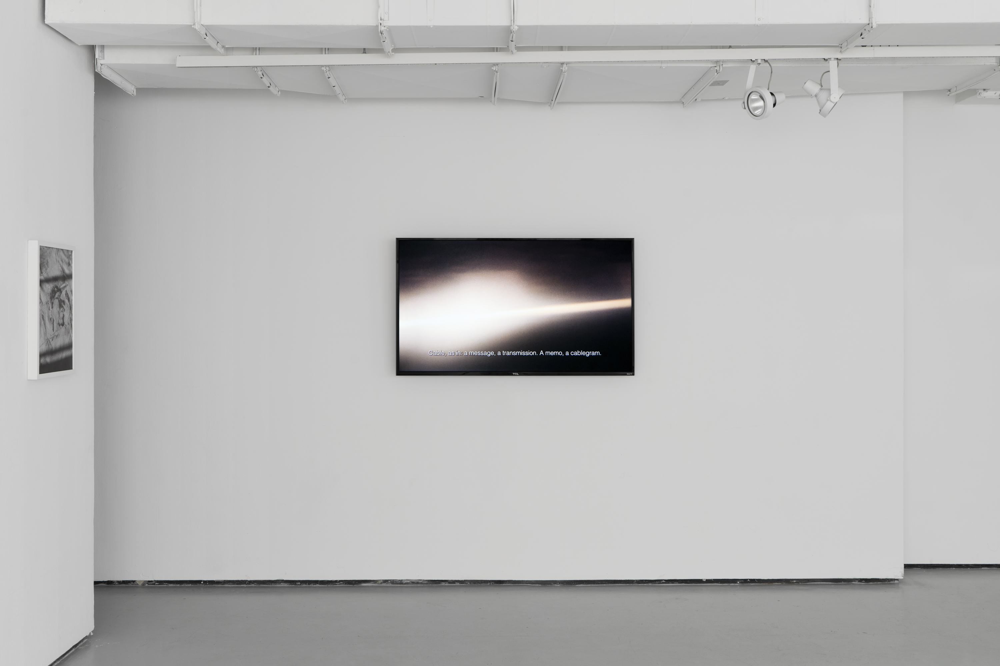
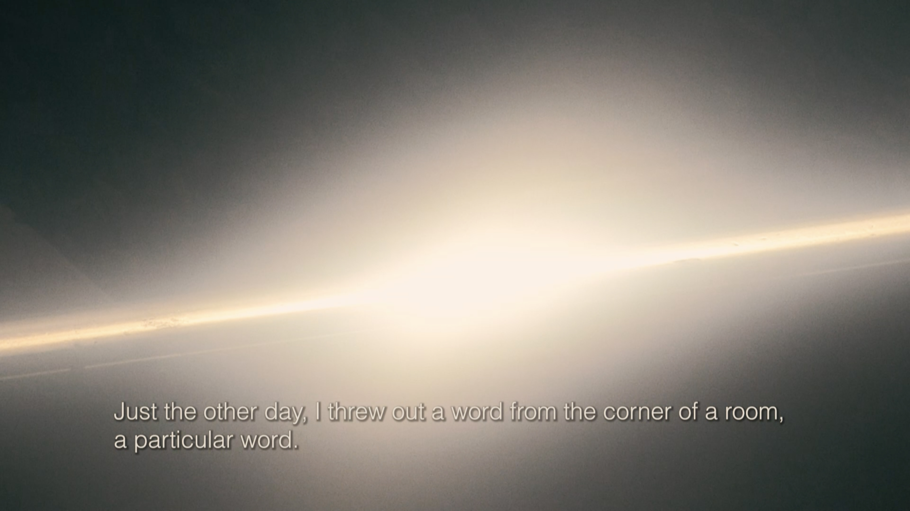
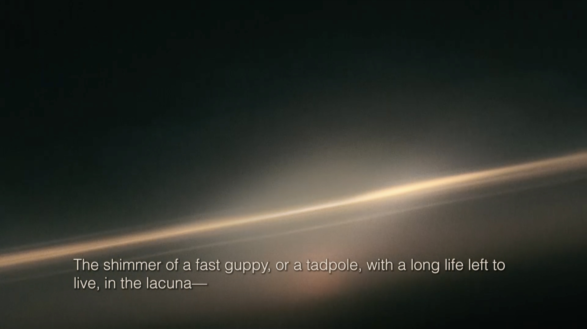
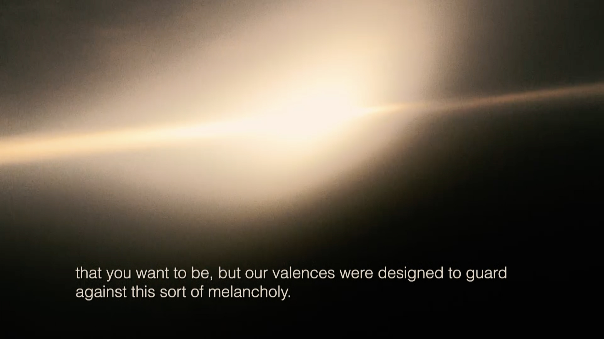
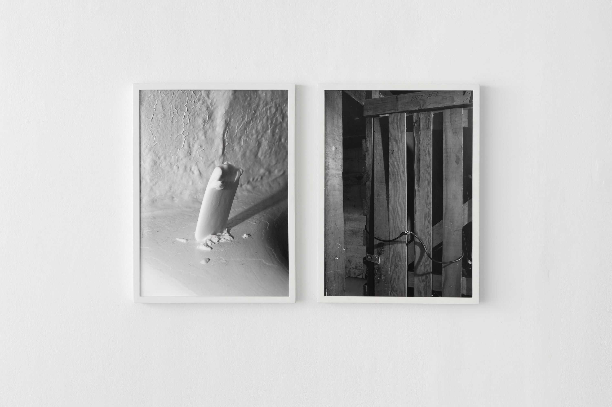
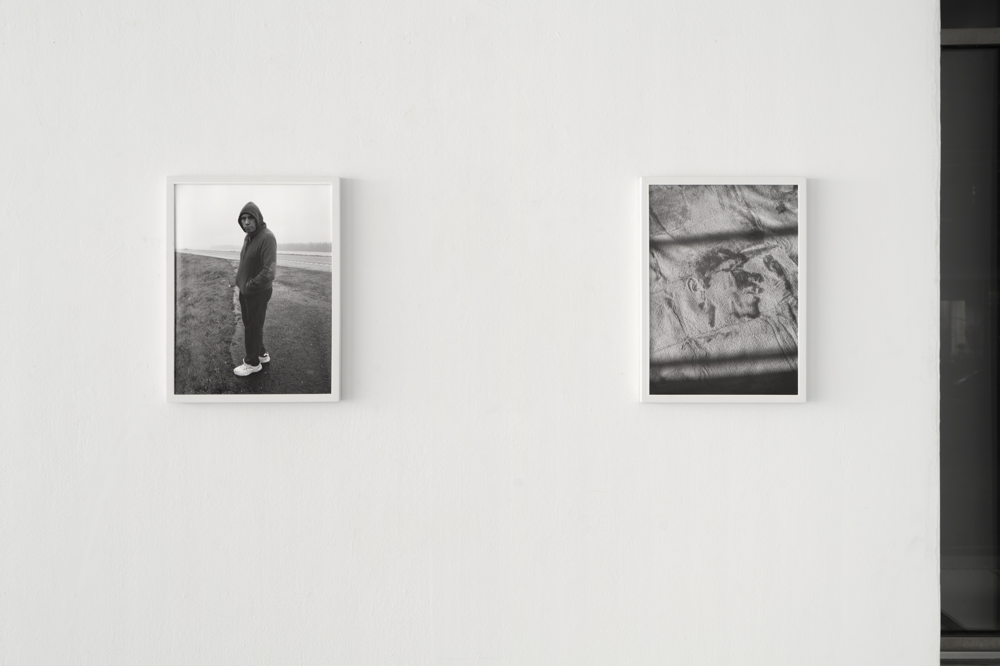

Installation view at Yale School of Art, 2022.
Installation view.
CABLE, or OSSUARY, 2021, single-channel video, 8:25.
  Untitled (Night Father II), 2021, archival inkjet print, 32" × 24".
Left: Untitled (Father’s Soap, Pubic Hair), 2021, archival inkjet print, 24" × 17". Right: Untitled (Basement Locker, Apt #1), 2022, archival inkjet print, 24" × 17".
Left: Untitled (Father), 2022, archival inkjet print, 20" × 15". Right: Surrogacy, 2021, archival inkjet print, 20" × 15".
Possessed, I began the day with a simple question:
how will I catch the light? There was still so much
left to do in the day, a day that started
days ago. Fields of wet grass
I hadn’t been on. Could I go there next? I made plans
for the city out in front of me. The knowledge
my hamstring held could take me there.
The birds had said their piece
the night before. The fruit bowl had arrived. Not a piece
of fruit wilted or marred except for a single thumbprint
printed onto the skin of a pear. Good thing
I never cared for pears.
I gave the birds eternal glory—watermelon rinds—
and they gave me restlessness in return.
Four hornets now, more to come.
Then you walked in. Sudden company. First
the string of small admissions—that you had only your hairstylist
to thank for the promotion; the pepper ants
you crushed with your heel, the ash you tossed
into the mailbox—neither of them accidents.
Then the larger ones,
the ones I could not handle. I made it clear
I didn’t need the photographic evidence. I sit
with my reality all day long.
Excerpt from “Pretense”, a poem by the artist